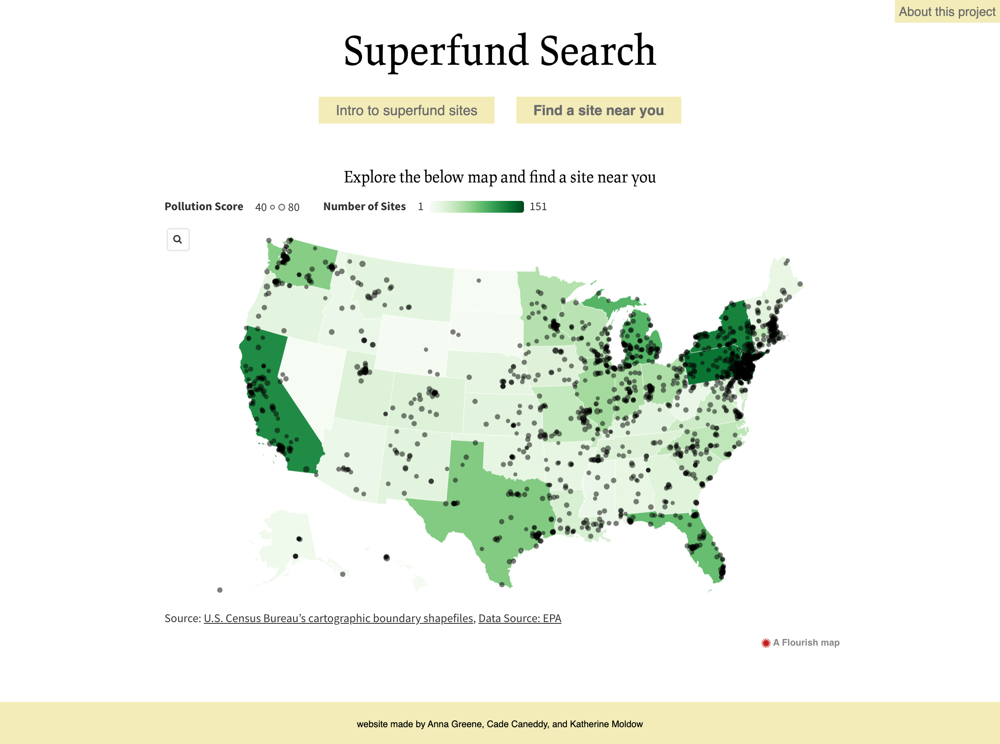
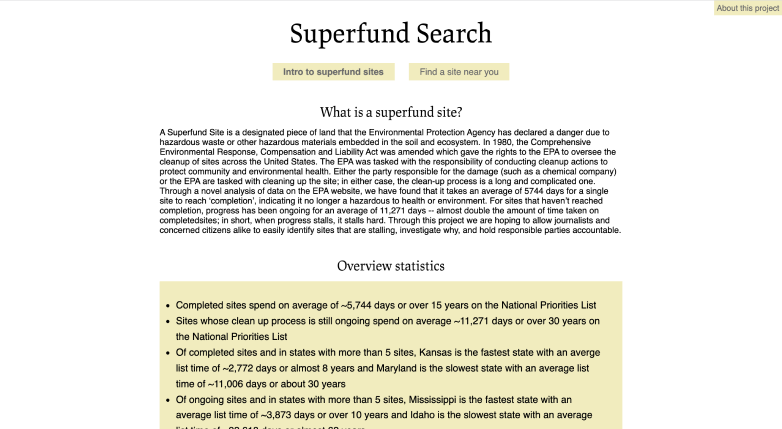
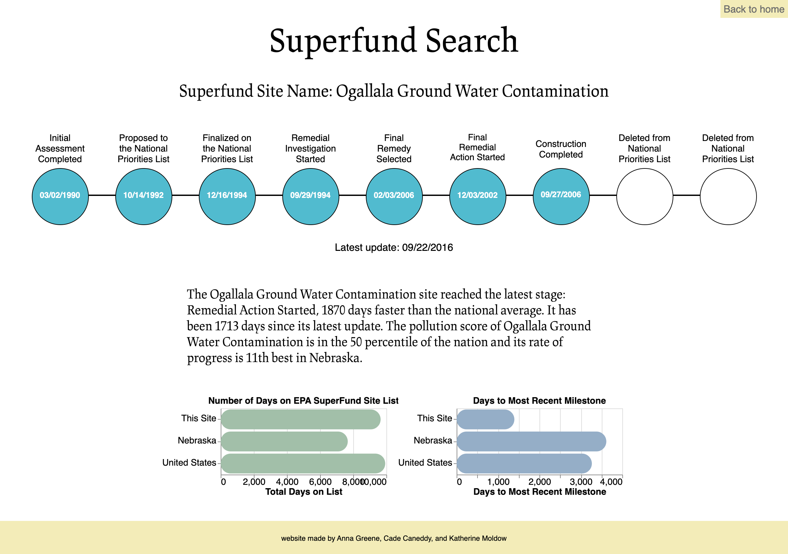

SUPERFUND SEARCH
Superfund Search is a tool that allows users to investigate all EPA-designated toxic waste Superfund sites. The EPA currently maintains a digital list and map of superfund sites but their website is difficult to use and not visually appealing. Additionally, there is no accessible online information that analyses superfund site data and allows the average person to compare statistics about sites. Our challenge was to create the data framework and a website from scratch that filled these needs. Our high level goals for Superfund Search were:
- to create a website that would allow the average concerned citizen or journalist to easily find information about toxic sites in their area
- to synthesize and analyze clean-up timeline data to allow users to better understand how Superfund Sites relevant to them compare to others and advocate for better environmental responsibility
Using EPA data, the tool allows users to compare the clean-up progress of these sites in a state-wide and national context. Superfund Search was developed for the Stanford Programming & Journalism class Building News Applications. As the lead designer on a team of three students, I wrote the
code for the website and made all design decisions regarding color, style, and typography. I also created all data visualizations using vegalite api, and used python to do half of the back-end data cleaning, preparing, and analyzing. The live website can be viewed
here.

The goal with the design of Superfund Search was to showcase all of the statistical calculations my team computed. To achieve this, I kept the website design very simple and clean. I made sure the homepage had enough information for appropriate context, and highlighted some overarching statistics. The color palette and typography also clue in the user to the scientific content while still remaining trendy enough to catch the user’s attention and show that our tool is not your standard government design aesthetic.

Once users click on a superfund site from the map function, they are taken to the focus of our tool. Using a jinja2 pipeline, my team and I created a webpage for every superfund site in the United States. Similar to the homepage, my design goals were centered around presenting the statistics and data visualizations as cleanly as possible so that users could quickly find the information they were looking for. By keeping extraneous or superfluous information at bay, the individual site pages allow our data to shine.
